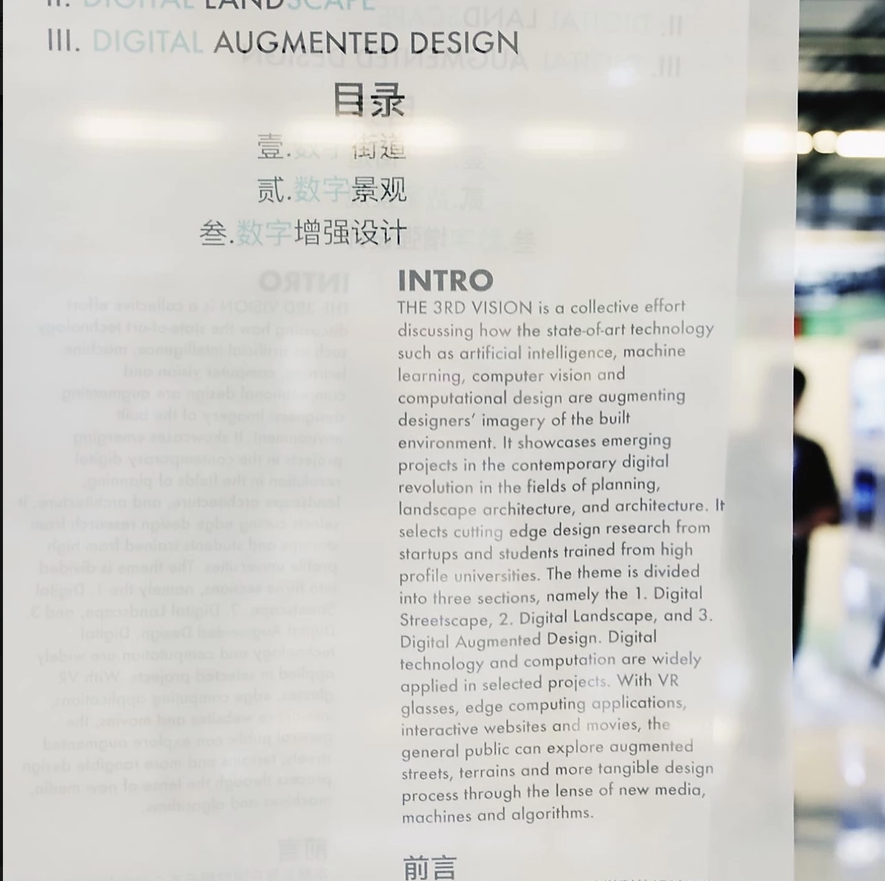
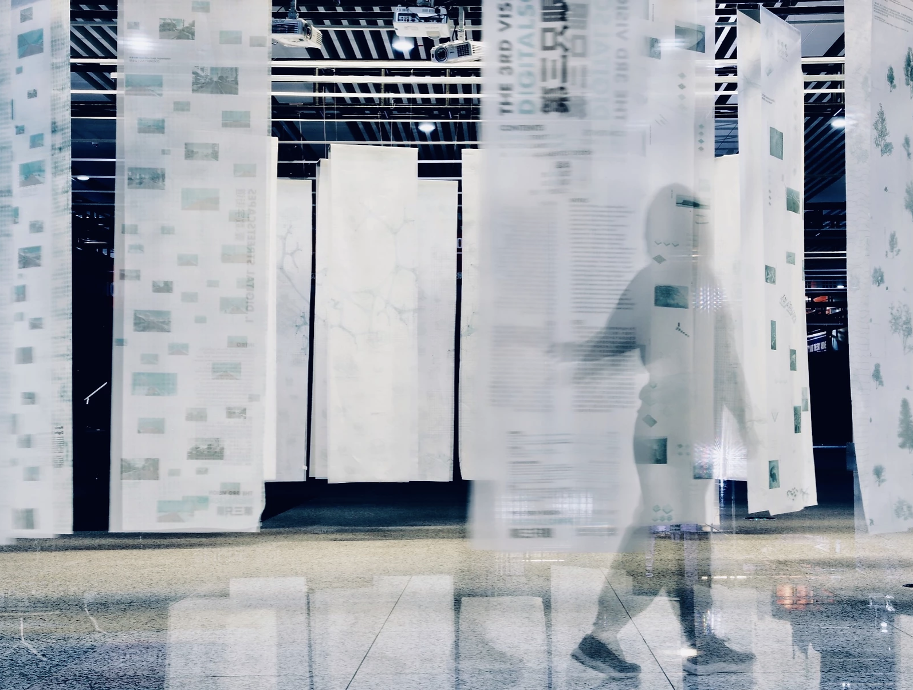
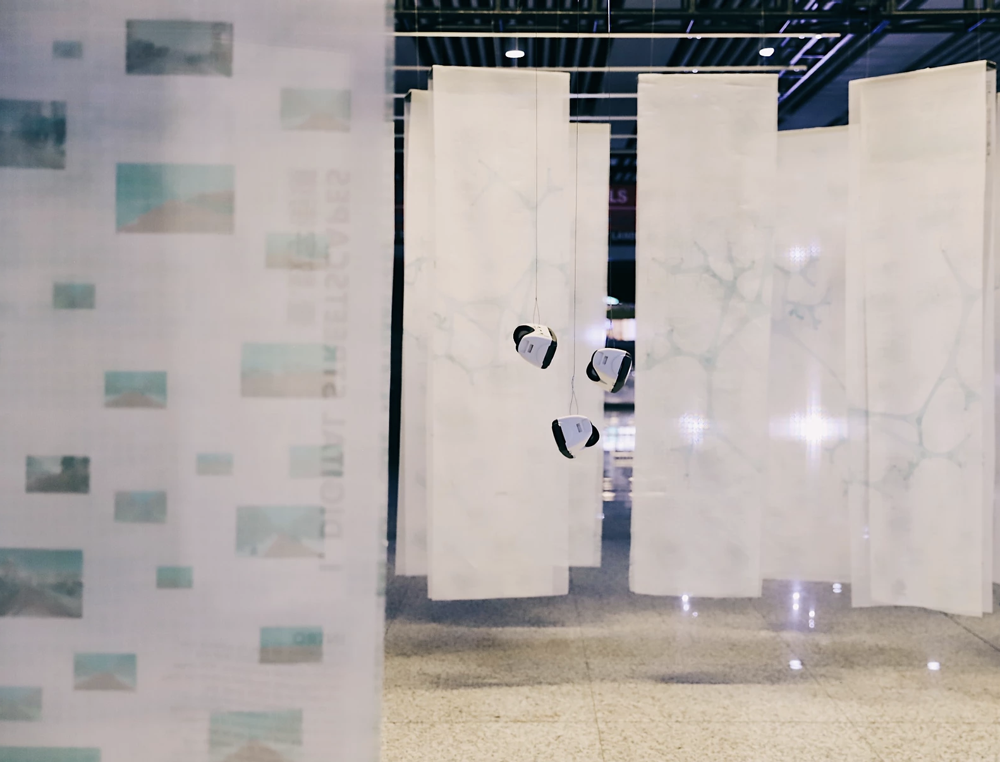

THE 3RD VISION is a collective effort discussing how state-of-art technology such as artificial intelligence, machine learning, computer vision, and computational design are augmenting designers’ imagery of the built environment. It showcases emerging projects in the contemporary digital revolution in the fields of planning, landscape architecture, and architecture. It selects cutting edge design research from startups and students trained from high profile universities. The theme is divided into three sections, namely the 1. Digital Streetscape, 2. Digital Landscape, and 3. Digital Augmented Design. Digital technology and computation are widely applied in selected projects. With VR glasses, edge computing applications, interactive websites, and movies, the general public can explore augmented streets, terrains and more tangible design processes through the lens of new media, machines, and algorithms.